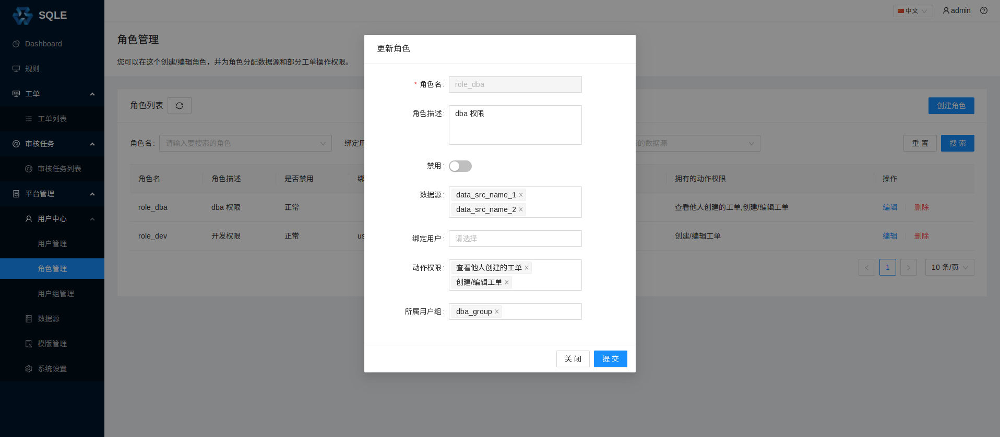

角色管理
创建角色
在左侧导航栏的「平台管理」-「用户中心」-「角色管理」页面中，点击「创建角色」，填写角色相关信息，如下图：

- 角色名；
- 角色描述（选填）：略；
- 数据源（选填）：如果当前还未添加数据源，可以在添加数据源后，通过「编辑」修改；
- 绑定用户（选填）：如果当前还未创建用户，可以在创建用户后，通过「编辑」修改；
- 绑定用户组（选填）：如果当前还未创建用户组，可以在创建用户组后，通过「编辑」修改；
- 动作权限(选填)：可以在创建时进行复选。或者在创建后，通过「编辑」修改。目前支持的动作权限见下方权限说明
权限说明
| 权限名 | 权限码 | 权限说明 |
|---|---|---|
| 查看他人工单 | 20100 | 当角色拥有该动作权限时，角色可以查看绑定的数据源上其他用户创建的工单 |
| 创建/编辑工单 | 20200 | 当角色拥有该动作权限时，角色可以在绑定的数据源上创建工单 |
| 工单审批 | 20300 | 当审核流程模版中的某个审核步骤指定为允许所有有权限的用户审批时, 拥有此权限的用户将可以审批对应工单 |
| 审核任务查看 | 30100 | 拥有此权限的用户可以查看所有审核任务, 无此权限的用户只能查看自己创建审核任务 |
| 审核任务创建 | 30200 | 拥有此权限的用户可以创建审核任务 |
修改角色

点击角色的「编辑」按钮，如下图：

上诉操作将角色 DBA 下的用户数据源更新为data_src_name_1和data_src_name_2，并且绑定了用户组dba_group。
用户、用户组与角色
用户是否能够进行某种操作，受限于用户所关联的角色的权限。 当两个角色绑定的动作权限与数据源都相同时，可以认为这两个角色是「相同」或「相等」。 结合用户组管理来看，一个用户所关联的角色由两部分组成：
- 用户自身所绑定的角色；
- 用户所在的用户组所绑定的角色。
因此，一个用户的权限实际上是上述两组角色的并集。
当出现以下情况时，用户会失去一个角色的权限：
- 将用户与该角色解绑，且用户没有关联其他相同权限的角色；
- 将该角色禁用，且用户没有关联其他相同权限的角色；
- 将该角色所在的用户组禁用，且用户没有关联其他相同权限的角色；
- 将该角色移出用户组，且用户没有关联其他相同权限的角色。